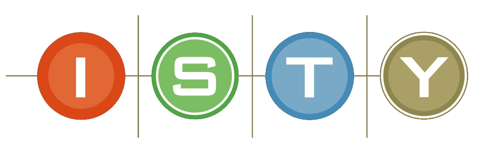

ISTY UVSQ |
 | |
Master’s degree in Mechatronics |
||
Paris, France |
||
2005-2009 |
Scientific Education
- Mathematics: Statistics and Probability, Algebra and Matrix Computation
- Physics: Electromagnetism, Thermodynamics
Engineering Sciences
- Automatic: Signal Processing, Continuous Automatic
- Electronics and Electrical Engineering
- Computer Engineering
- Materials
Sciences and Techniques for Mechatronics
- Mechanical Engineering
- Industrial Computing and CEM
- Robotics
- Software Tools: Matlab, Supervision Tool: Labview
- Mechanical CAD: CATIA, ADAMS
- Electronic CAD: Protel
Human and Managerial Sciences
- Quality Management
- Study of the Organization and Management of the Company
- Human Resources Management
- Languages: English
MONTPELLIER UNIVERSITY |
||
Technician Degree in Applied Physics |
||
Montpellier, France |
||
2003-2005 |
Measurement chain
Knows how to set up and configure a measurement chain, from the choice of the sensor to the display of data on a computer, including the conditioning, acquisition and processing of the signal sent by the sensor.
Metrological approach
Knows how to adopt a metrological approach: measurement protocol, uncertainty calculations, verification of the accuracy and reliability of a fleet of measurement instruments, application of the standards in force.
Measurement result
Knows how to interpret the result of a measurement or measurement campaign in all areas of the physical sciences (mechanical, optical, thermal, materials, acoustics, chemistry, etc.).
Reporting
Knows how to write test reports and communicate within the company.
Find out more about MONTPELLIER UNIVERSITY
HARVARD UNIVERSITY |
 |
|
CS50x Certificate in Computer Science |
||
online |
||
2020 |
CS50x
CS50x is an introduction to the world of the computer science and the art of programming.
This course teaches how to think algorithmically and solve problems efficiently.
Topics include abstraction, algorithms, data structures, encapsulation, resource management, security, and software engineering.
Languages include C, Python, and SQL plus students’ choice of: HTML, CSS, and JavaScript for web development.
Problem sets inspired by the arts, humanities, social sciences, and sciences.